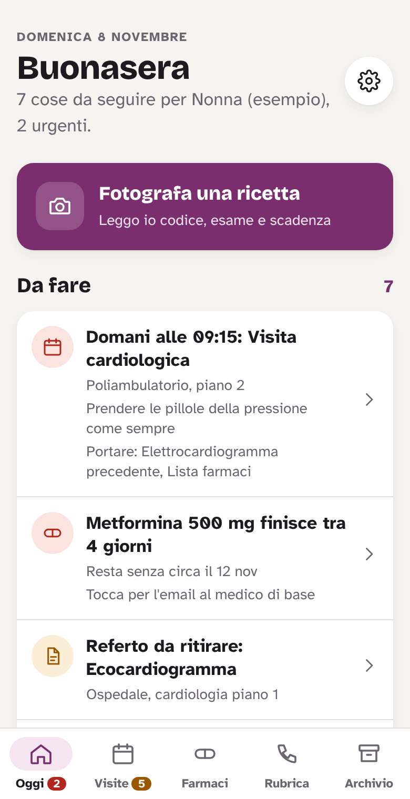
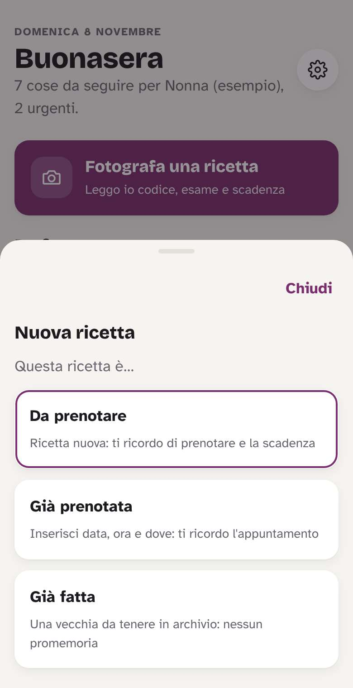
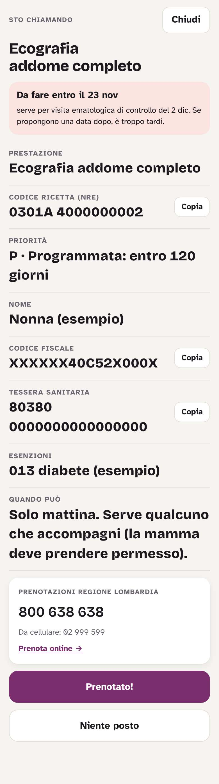
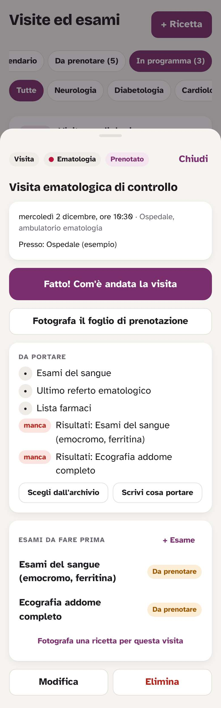
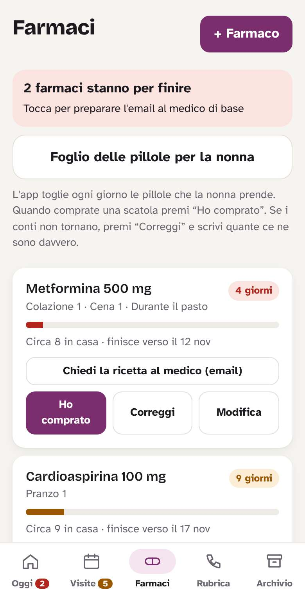
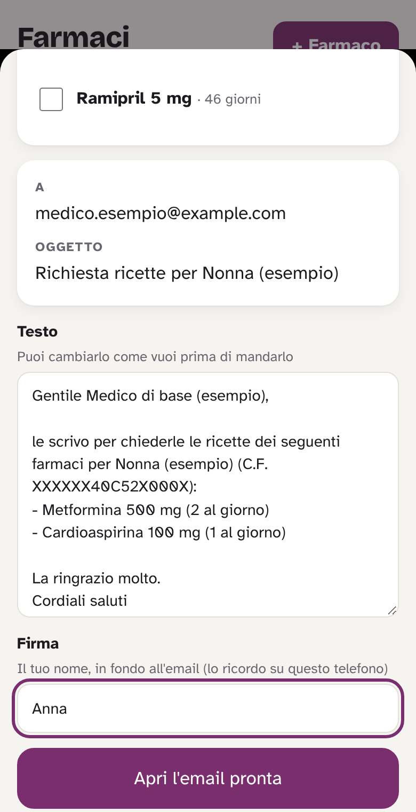
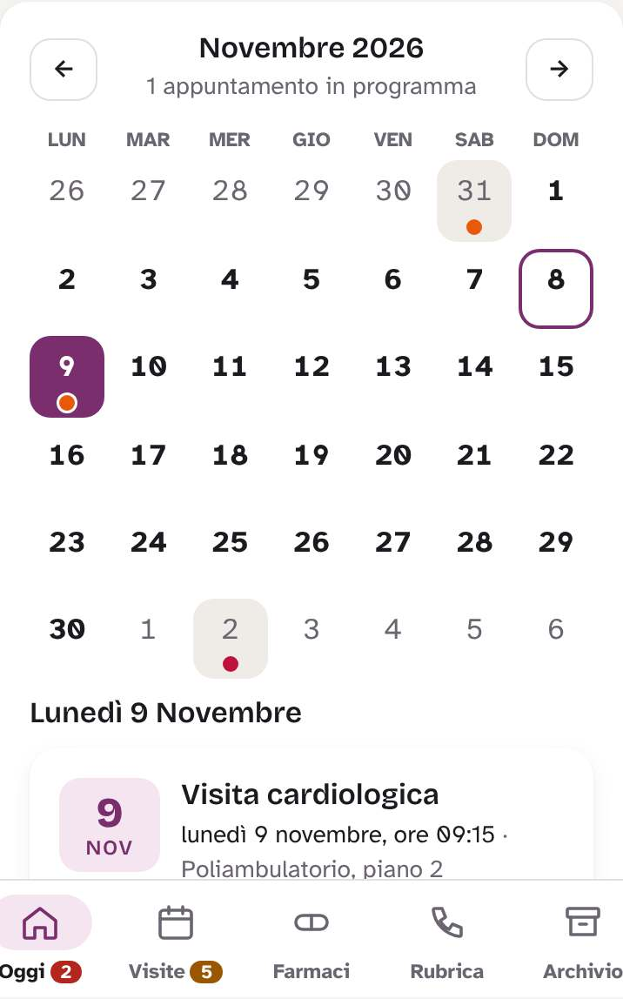

Come funziona l'app
Tutto quello che serve per la nonna in un posto solo: visite, ricette, farmaci e documenti. Le foto qui sotto hanno dati di esempio.
1La schermata Oggi
Appena apri l'app vedi cosa c'è da fare: visite dei prossimi giorni, cose da prenotare, farmaci che finiscono, referti da ritirare.
- Tocca una riga per aprirla e fare la cosa giusta.
- Le righe rosse sono urgenti, quelle arancioni da tenere d'occhio.
- In fondo c'è il calendario del mese.

2Una ricetta nuova
Premi Fotografa una ricetta e scegli:
- Da prenotare: ricetta appena fatta dal medico.
- Già prenotata: poi fotografi anche il foglio di prenotazione.
- Già fatta: una vecchia, solo da tenere in archivio.
Fai la foto dall'alto, con buona luce: l'app legge da sola codice, esame, priorità e scadenza. Tu controlli e premi Salva.

3Quando chiami il CUP
Apri la ricetta e premi Sto chiamando per prenotare. Vedi in grande tutto quello che chiede l'operatore: codice della ricetta, codice fiscale, tessera, esenzioni.
- In rosso c'è entro quando va fatto: se ti danno una data dopo, è troppo tardi.
- Tocca il numero del CUP per chiamare.
- Alla fine premi Prenotato! e scrivi data, ora e dove. Se hai il foglio di prenotazione, fotografalo: compila tutto da solo.
- Se non c'è posto premi Niente posto e scegli quando richiamare: quel giorno te lo ricordo.

4Prima e dopo la visita
Apri la visita per vedere dove andare, le istruzioni (es. digiuno) e cosa portare. Quello che manca è segnato in rosso.
- Tessera, impegnativa e documenti vecchi non sono scritti: li porti sempre.
- Dopo la visita premi Fatto! e fotografa il referto: finisce in Archivio.
- Se il medico chiede un nuovo controllo o degli esami, premi Programma il prossimo controllo.

5I farmaci
Per ogni farmaco l'app sa quante pillole prende la nonna e quante ce ne sono in casa, e ti dice quando finiscono.
- Quando compri una scatola: Ho comprato.
- Se i conti non tornano, conta le pillole e premi Correggi.
- Foglio delle pillole per la nonna: una tabella da stampare con le pillole di colazione, pranzo, cena e sera.

6Chiedere le ricette al medico
Quando un farmaco sta per finire, tocca Chiedi la ricetta al medico (email). L'email è già scritta con i farmaci e le dosi: controlla e premi Apri l'email pronta, poi Invia.

7Il calendario
I giorni con un pallino hanno una visita o un esame. Tocca il giorno per vedere cosa c'è. Utile per chiedere i permessi al lavoro.

8Le notifiche
Alle 7 del mattino, solo quando serve:
- visite: 2 giorni prima, il giorno prima e la mattina stessa;
- ricette che scadono e farmaci che finiscono: 7 giorni e 2 giorni prima;
- richiamare il CUP e referti pronti: il giorno stesso.
Tocca la notifica per aprire l'app. Se un giorno non arriva niente, vuol dire che non c'è niente di nuovo.
9Esami del sangue e referti per email
In cima all'Archivio ci sono sempre gli ultimi esami del sangue: i valori fuori norma in rosso e le frecce ↑ ↓ rispetto alla volta prima.
- Nuovi esami: + Nuovi esami, poi foto o PDF. I valori li legge l'app.
- Se arrivano per email: tocca il PDF nell'email → Condividi → Nonna. Si apre l'app con il file già pronto: premi Salva.
- Se “Nonna” non compare in Condividi: scarica il PDF e in Archivio usa Scegli foto o PDF.
10Il resto
- Archivio: referti e fogli di prenotazione, divisi per reparto. Puoi cercare per nome.
- Rubrica: il numero del CUP e il medico di base con la sua email.
- Impostazioni (la rotella in alto in Oggi): dati della nonna, notifiche, colori.
Apri sempre l'app dall'icona sul telefono, così non ti chiede ogni volta la password.